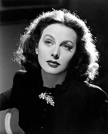

Hedy Lamarr

Hedy Lamarr
3 things you need to know about Mufti Menk
- Hedy Lamarr she was born in Vienna, Austria-Hungary 9 November 1914
- She was an Austrian-born American actress, inventor, and film producer
- She appeared in 30 films over a 28-year career in Europe and the United States, and co-invented an early version of frequency-hopping spread spectrum communication, originally intended for torpedo guidance.